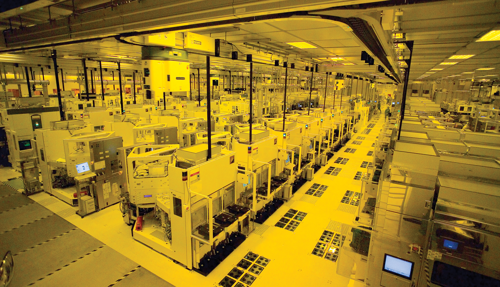
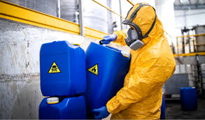
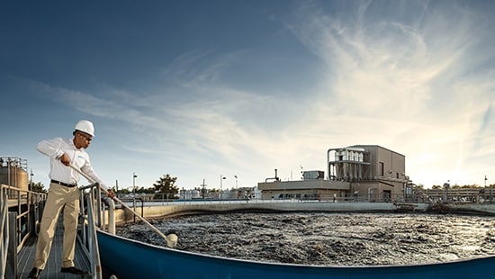
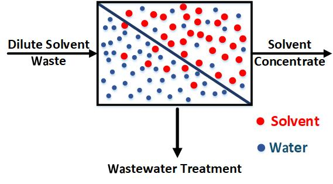

Disposal cost avoided
Lower gallons shipped, treated, or incinerated
NanoSepex's proven membrane system recovers solvent materials and reclassifies the wastewater for discharge
Lower gallons shipped, treated, or incinerated
Recovered solvent concentrate retains economic value
Potential to reduce handling complexity depending on concentration and local requirements
Less trucking, incineration, and solvent demand
Applications
Reduce hazardous solvent waste from pharmaceutical production
Pharmaceutical manufacturers and CDMOs generate solvent-containing waste from synthesis, purification, cleaning, extraction, and formulation processes. These streams may contain APIs, organics, high COD, VOCs, salts, or other process contaminants

Recover value from high volume fab solvent waste
Semiconductor fabs use large volumes of high-purity chemicals and solvents for wafer cleaning, photolithography, stripping, rinsing, and equipment maintenance. Once contaminated, these solvents can become costly liquid waste streams

Lower disposal costs from solvent-intensive chemical production
Specialty chemical manufacturers often produce variable solvent waste streams from reactions, separations, cleaning, blending, and product changeovers. These streams may be too valuable to incinerate but too complex to reuse without treatment

Add recovery value before treatment or disposal
Wastewater handlers, hazardous waste firms, and industrial waste service providers often receive solvent-containing streams from multiple customers. Material that may otherwise be fuel blended or incinerated can be assessed for solvent recovery
Recover alcohol and reduce liquid waste from processing
Food and beverage companies generate alcohol-containing or solvent-like liquid streams from fermentation, extraction, flavor production, dealcoholizing, cleaning, and processing
Technology

Savings Calculator
Compare normal disposal costs with NanoSepex solvent recovery and wastewater discharge economics
Contact us
Reach out to learn more about NanoSepex technology, applications, partnerships, or project fit